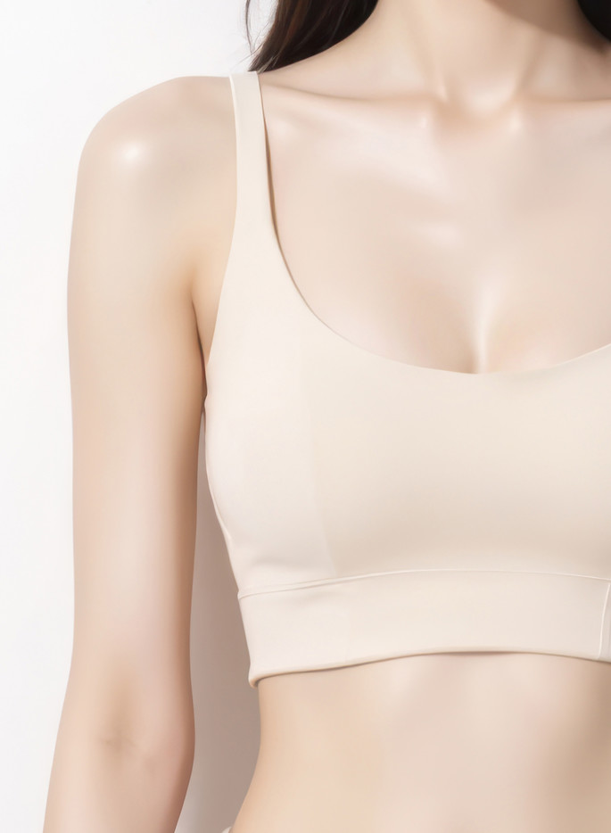
豊胸
美しいIライン
自然で美しい
自分だけの一生の美胸

美しいIライン
自然で美しい
自分だけの一生の美胸
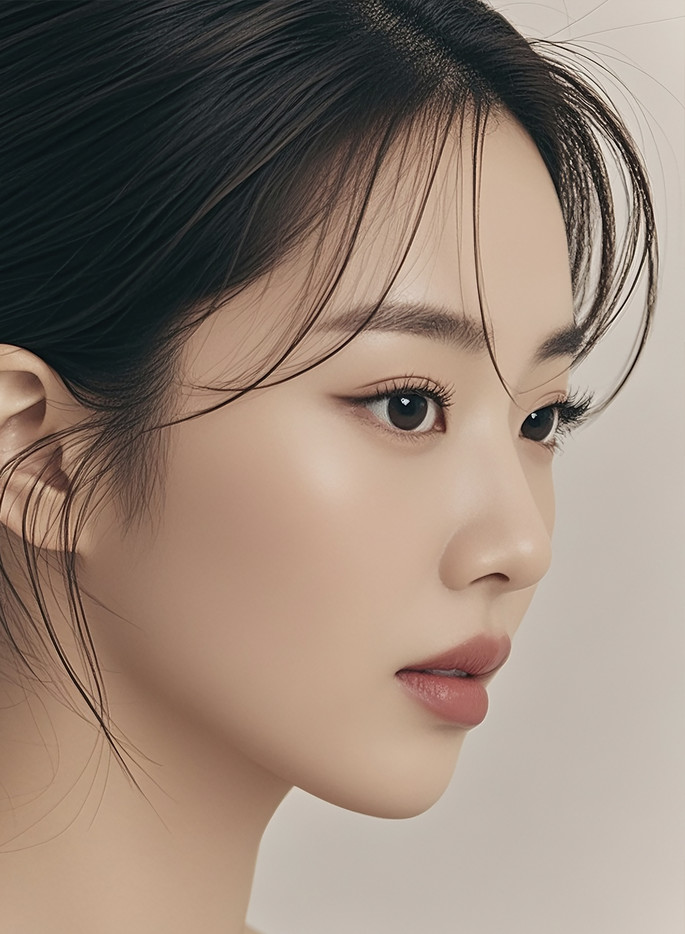
全体バランスを考えた
オーダーメイド術式
洗練されたライン
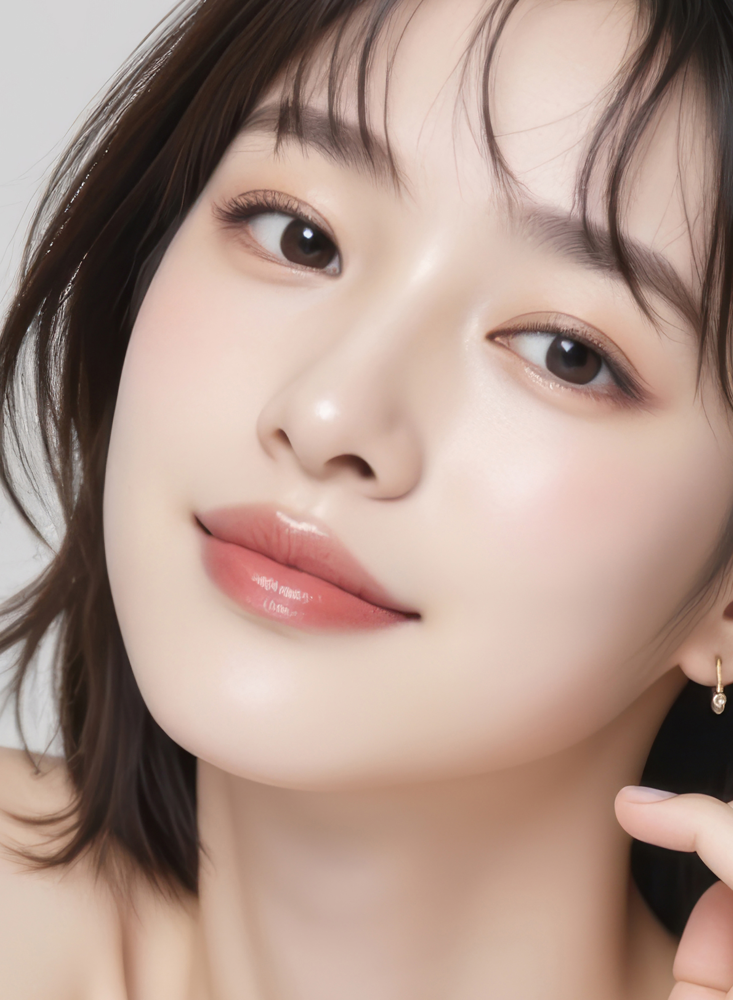
素敵な第一印象
愛らしく綺麗な
自然な目もと
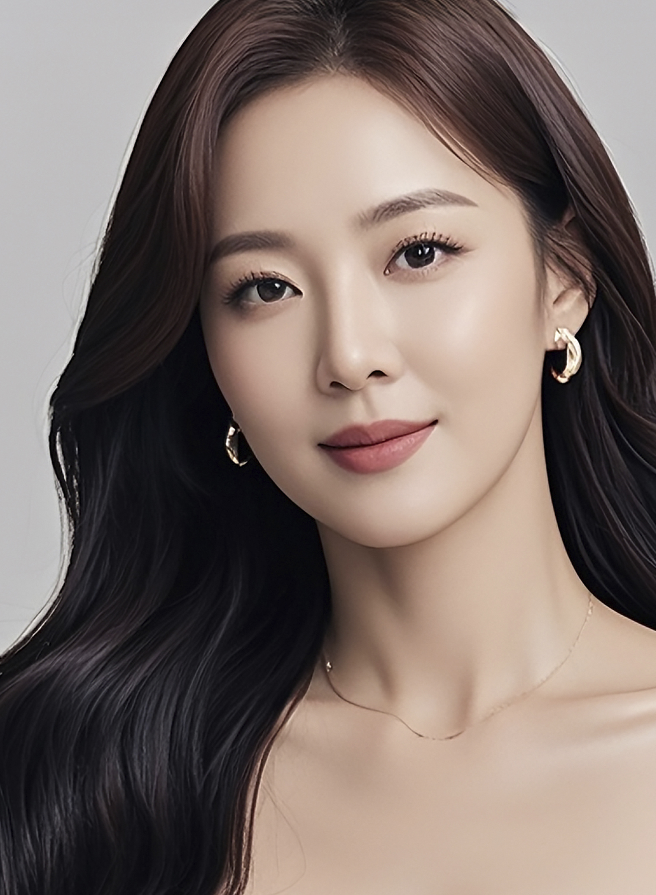
目に見える
タイムスリップ効果
自分だけのオーダーメイド
リフティングケア

細胞から始まる
若さのリセット
いきいきとした肌へ
初回・麻酔代＋消費税込み
39万ウォン
初回・税込
39万ウォン
税込 243.1万ウォン
49% 122.1万ウォン
税込
231万ウォン
優雅な美しさを創る整形外科。
長年の経歴と責任感のある診療で信頼を築いています。
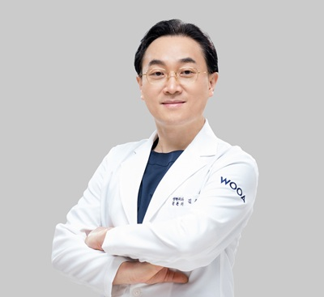
院長
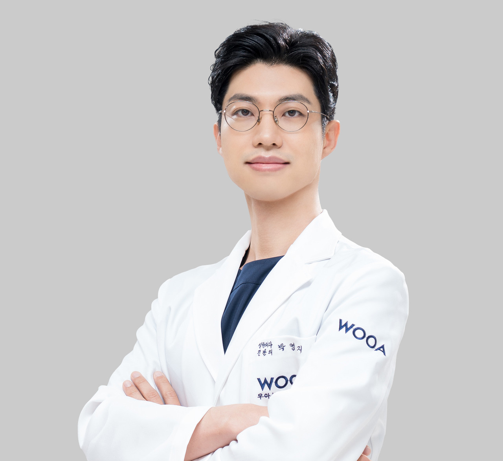
院長
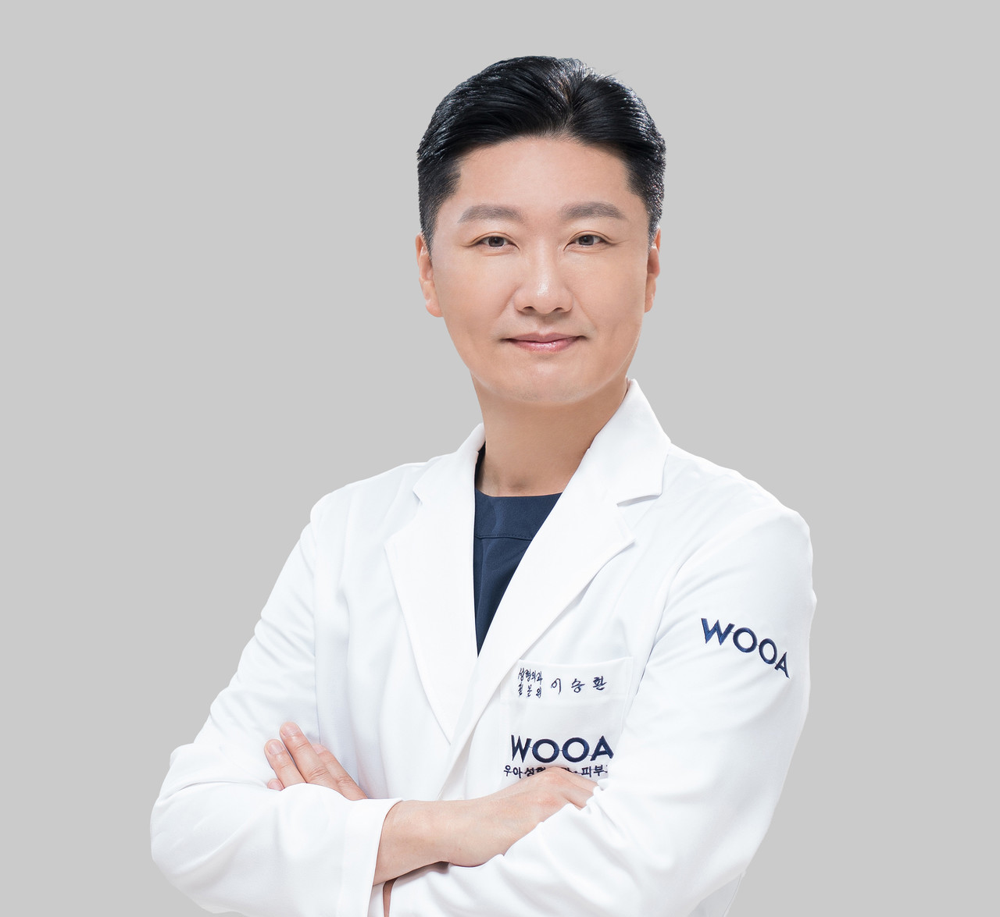
院長
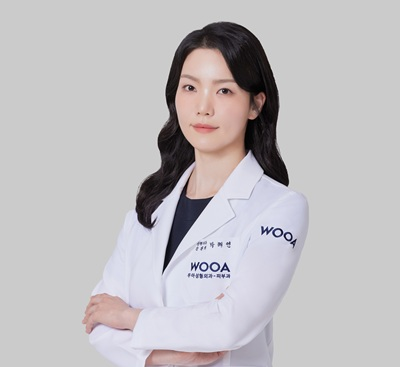
院長
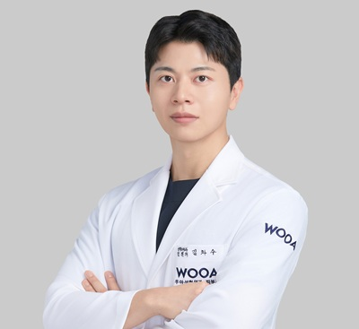
院長
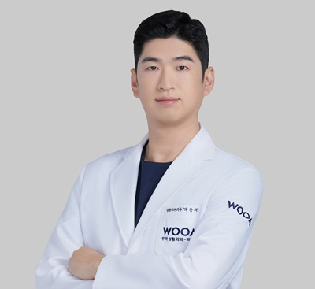
院長
透き通るように輝く肌をつくる皮膚科。
皮膚に対する絶え間ない研究と先端機器が完璧を生み出します。
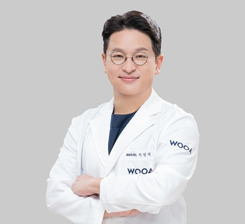
院長
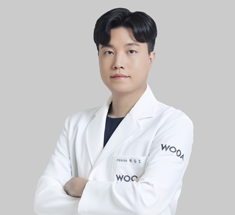
院長
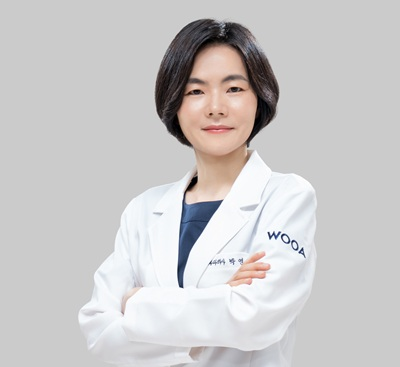
院長
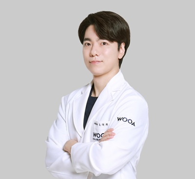
院長
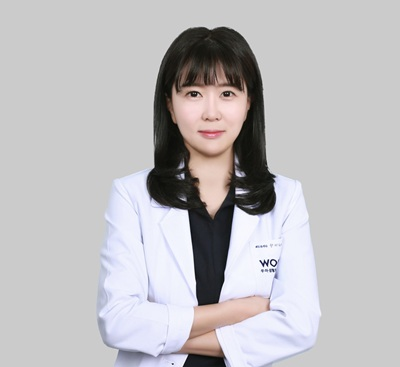
院長
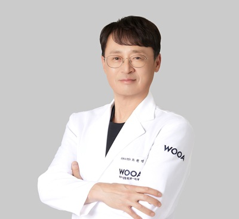
院長
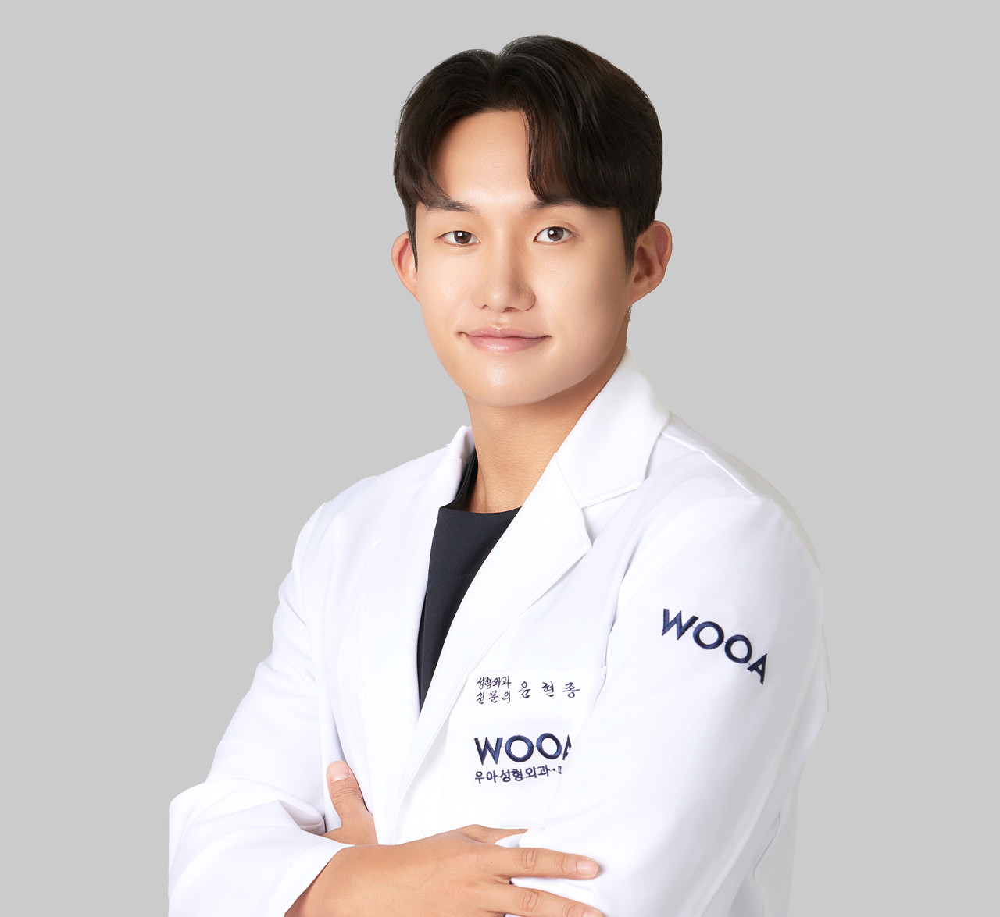
院長
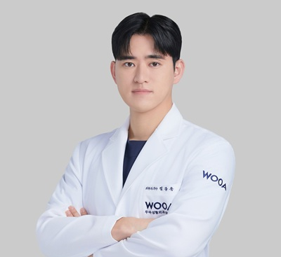
院長
安全な手術を完成させる麻酔痛症医学科。
手術前の評価から回復まで、麻酔科専門医による体系的な管理で、最も安定した環境を提供します。
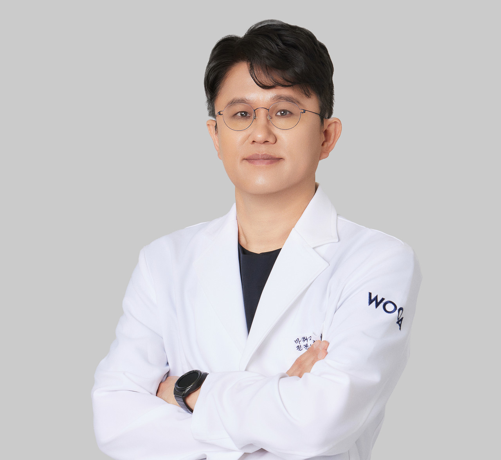
院長

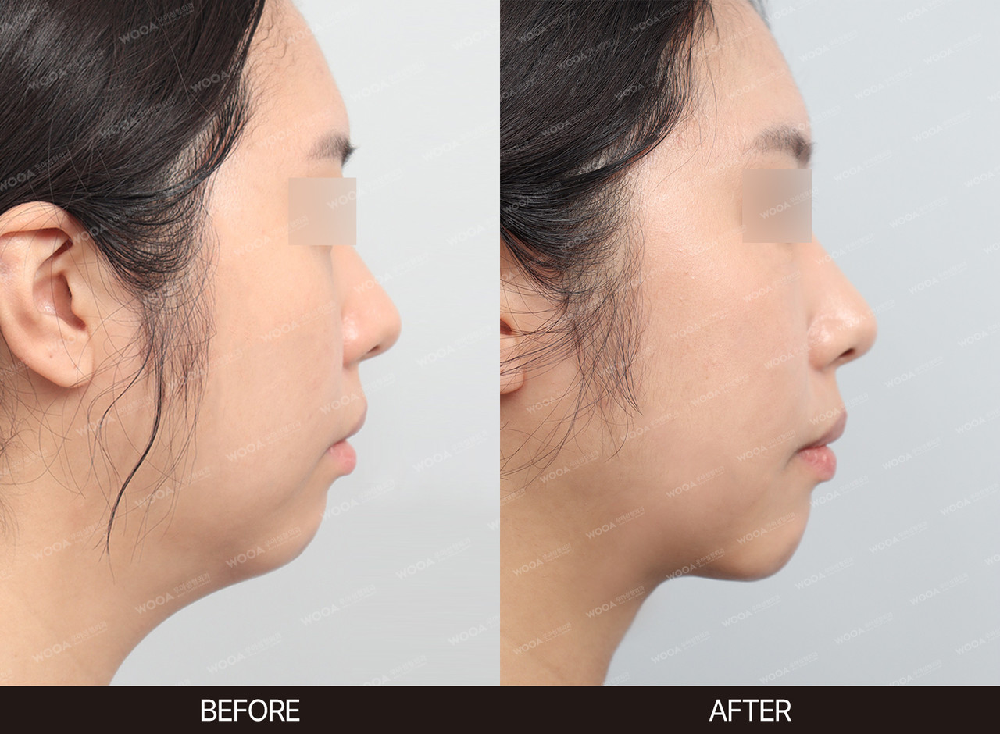

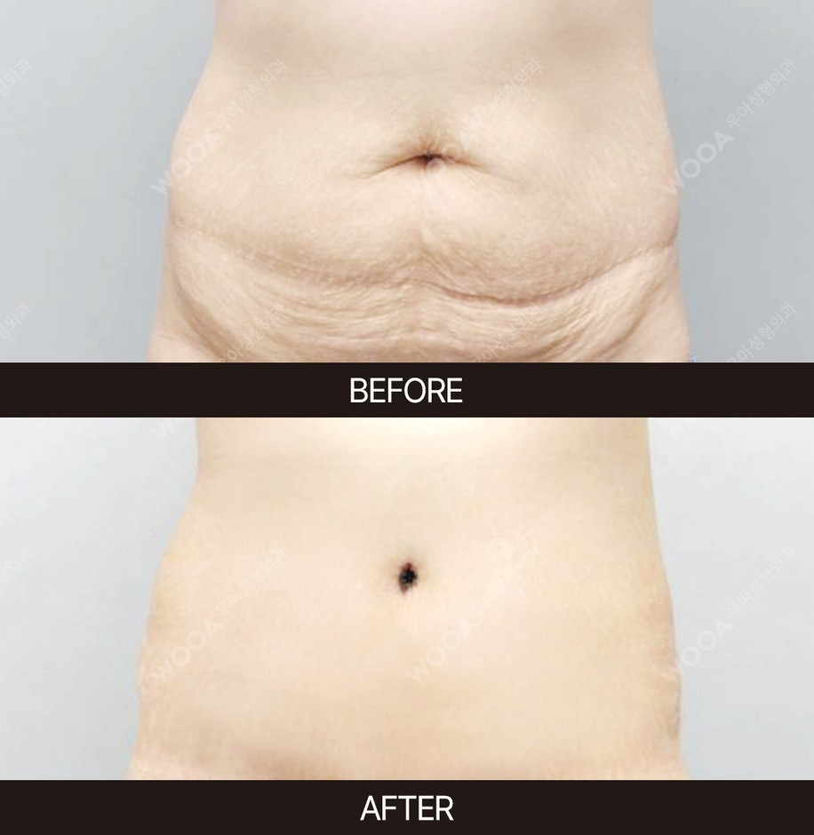
専任の日本語対応スタッフが対応いたします。LINEでの事前相談も日本語で承ります。
施術内容によって異なります。糸リフトは数日〜1週間程度、二重整形は1〜2週間程度が目安です。詳細はカウンセリング時にご説明します。
はい、クレジットカードでのお支払いが可能です。詳しくはお問い合わせください。
日本語サポートスタッフが在籍しております。安心してご来院ください。
ソウル特別市 江南区 江南大路492 HMタワー
[整形外科 3〜6F／皮膚科 10・12F]
いつでもお気軽にご相談ください
日本語対応スタッフが、お悩みに丁寧にお応えいたします。